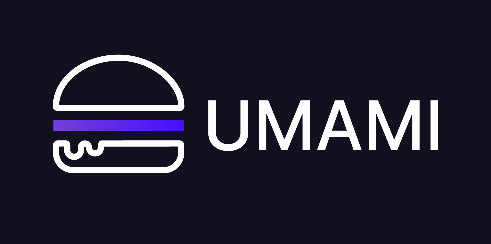

Offline Website Builder
Umami Finance: A Human-Centered Introduction to Sustainable DeFi
Google Ads
Umami Finance is a decentralized finance (DeFi) protocol built on the Arbitrum Layer 2 network, specializing in generating sustainable, risk-hedged yield for core crypto assets like USDC, BTC, and ETH. It aims to bridge the gap between traditional institutional investors and the DeFi space by offering compliant, non-custodial yield products.
How It Works
Umami Finance uses complex, algorithmic hedging strategies in its "vaults" to generate returns while minimizing exposure to market volatility (known as "delta-neutral" strategies).
Yield Generation: The vaults primarily generate yield by providing liquidity to established protocols like GMX's leveraged perpetuals exchange.
Risk Mitigation: Instead of relying on external incentives, Umami focuses on sustainable revenue streams and uses hedging to protect deposited assets against significant price swings in the underlying collateral.
Non-Custodial: User assets are managed through trustless, audited smart contracts, meaning Umami Labs does not have custody or control over deposited funds.
The UMAMI Token
The native token, $UMAMI, is a fixed-supply governance and fee-generating token with a maximum supply of 1,000,000. It is not an inflationary token; all new tokens are not minted, which makes the existing tokens more desirable as the protocol's treasury grows.
Holders can stake their $UMAMI tokens in two ways:
Marinate ($mUMAMI): Stakers receive a share of the protocol's revenues, paid directly in ETH.
Compound ($cmUMAMI): This option automatically reinvests the earned ETH rewards to market-buy and stake more $UMAMI, passively compounding the holder's position over time.
Key Insight: A Shift to Bonsai DAO
In April 2024, the project announced its evolution into Bonsai DAO, a new meta-DAO ecosystem. The existing $UMAMI token was deprecated in exchange for the new $BONSAI token at a 1:10 ratio, allowing stakeholders to retain their proportional stake in the new, broader ecosystem.
Note: Umami Finance faced controversy in early 2023 when the CEO sold a large portion of tokens amidst a halt in yield payouts and accusations of a potential "rugpull," though the company cited regulatory concerns and legal battles as the reason for the disruptions.
Offline Website Builder